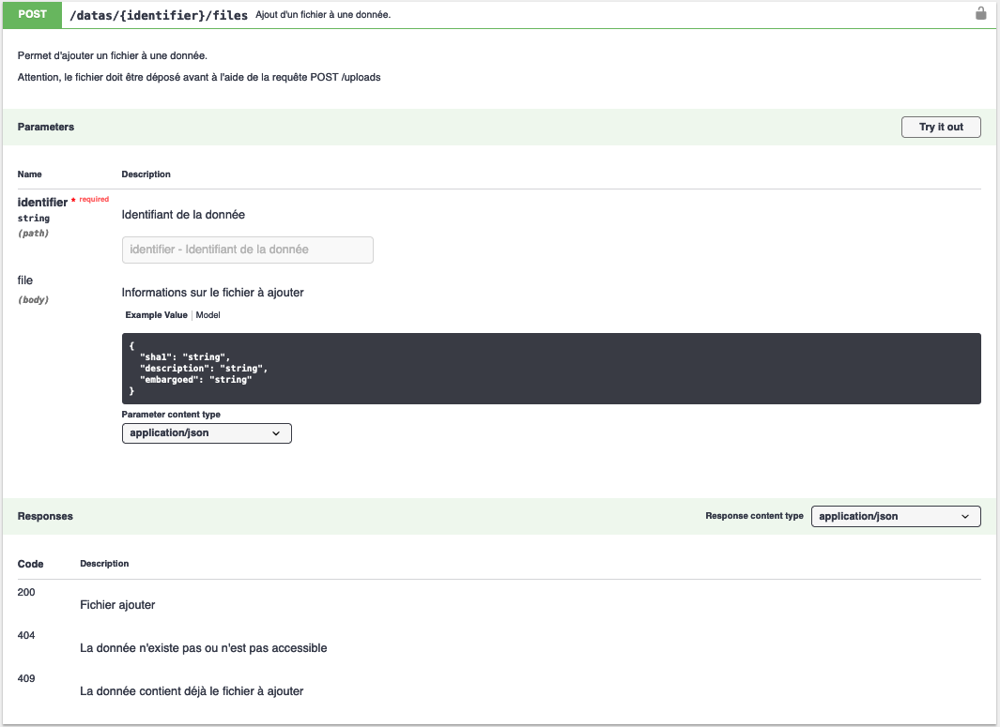
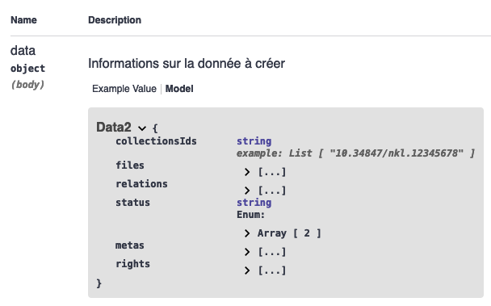

Getting started
Installation
Nakala.jl et API Nakala
La librairie Nakala.jl permet d'envoyer des requêtes à l'API Nakala afin de créer, modifier ou supprimer des données, ainsi que toutes les informations et métadonnées qui les accompagnent.
Chaque fonction du package permet d'envoyer une requête à un endpoint spécifique de l’API et est nommée d'après ce dernier.
Pour dialoguer avec l’API, les fonctions peuvent prendre jusqu'à 3 voire 4 arguments obligatoires :
identifier,fileIdentifier: identifiant de la donnée, de la collection, etc. que l’on souhaite requêter ;headers: l'en-tête HTTP, contenant généralement votre clé API et, selon la requête, le type de données envoyées et le type de données acceptées en retour ;body: le corps de votre requête contenant des informations structuréesparams: des paramètres qui sont passés dans l’url de la requête, afin, souvent, de filtrer les résultats.
Le contenu attendu des éléments headers, body et params et l'objet retourné par la requête sont fournis par la documentation de l’API. Pour les néophytes, la documentation sert aussi de bac à sable, vous permettant de visualiser les paramètres envoyés avec la requête.

Prise en main
Pour prendre en main Nakala.jl, voyons comment déposer une donnée sur Nakala, puis comment la modifier. Pour interagir avec l'API, il est nécessaire de disposer d'une clé API, pour les besoins de cet exemple, nous utiliserons une clé publique fournie avec l'API de test.
Déposer un fichier sur l'espace temporaire
La documentation nous apprend que les fichiers constituant une donnée doivent être déposés au préalable de la création de ladite donnée.
La fonction postdatas_uploads() permet de déposer un fichier dans un espace temporaire, avant qu'il soit assigné à une donnée. Elle prend deux argument :
file, qui correspond au chemin vers le fichier à envoyer ;headers, l'en-tête de la requête.
Nous ajouterons le keyword argument apitest=true afin de travailler avec l'API de test.
julia> using Nakala
julia> file = "~/mydata/file.txt"
"~/mydata/file.txt"
julia> apikey = "01234567-89ab-cdef-0123-456789abcdef"
"01234567-89ab-cdef-0123-456789abcdef"
julia> headers = Dict(
"X-API-KEY" => apikey, # clé publique de l'API de test
"Accept" => "application/json" # format de la réponse
)
Dict{String, String} with 2 entries:
"Accept" => "application/json"
"X-API-KEY" => "01234567-89ab-cdef-0123-456789abcdef"
julia> postdatas_uploads_response = Nakala.postdatas_uploads(file, headers, apitest=true)
Dict{String, Any} with 3 entries:
"body" => Dict{String, Any}("name"=>"file.txt", "sha1"=>"a0b65939670bc2c010f4d5d6a0b3e4e4590fb92b")
"status" => 201
"isSuccess" => trueLa fonction postdatas_uploads() retourne un dictionnaire. La réponse du serveur correspond à la valeur de la clé body.
Afin d'associer le fichier à la future donnée, il est nécessaire de récupérer son identifiant sha1. Cela peut être effectuer avec la commande suivante :
julia> sha1 = postdatas_uploads_response["body"][sha1]
"a0b65939670bc2c010f4d5d6a0b3e4e4590fb92b"Créer la donnée
Pour créer une donnée nous aurons besoin de la fonction postdatas(), qui accepte elle aussi deux arguments :
headersbody, le corps de la requête contenant les métadonnées nécessaires à la création de la donnée. Le modèle de données nous est fourni par la documentation

julia> headers = Dict(
"X-API-Key" => apikey,
"Content-type" => "application/json", # format des données envoyées
"Accept" => "application/json" # format de la réponse
)
Dict{String, String} with 3 entries:
"Content-type" => "application/json"
"Accept" => "application/json"
"X-API-Key" => "01234567-89ab-cdef-0123-456789abcdef"
julia> body = Dict(
:collectionsIds => [],
:files => [ Dict("name" => "file.txt", "sha1" => sha1, "embargoed" => "2024-09-01") ],
:status => "private",
:metas => [
Dict(:value => "Ma données", :propertyUri => "http://nakala.fr/terms#title", :lang => "fr", :typeUri => "http://www.w3.org/2001/XMLSchema#string"),
Dict(:value => "http://purl.org/coar/resource_type/c_18cf", :propertyUri => "http://nakala.fr/terms#type", :typeUri => "http://www.w3.org/2001/XMLSchema#anyURI"),
Dict(:value => Dict(:surname => "Rémi", :givenname => "Fassol"), :propertyUri => "http://nakala.fr/terms#creator", :typeUri => "http://www.w3.org/2001/XMLSchema#string"),
Dict(:value => "2024-09-01", :propertyUri => "http://nakala.fr/terms#created", :typeUri => "http://www.w3.org/2001/XMLSchema#string"),
Dict(:value => "PDM", :propertyUri => "http://nakala.fr/terms#license", :typeUri => "http://www.w3.org/2001/XMLSchema#string"),
Dict(:value => "Description", :propertyUri => "http://purl.org/dc/terms/description", :lang => "fr", :typeUri => "http://www.w3.org/2001/XMLSchema#string"),
Dict( :value => Dict( :surname => "Rémi", :givenname => "Fassol" ), :propertyUri => "http://nakala.fr/terms#creator" )
],
:rights => []
)
Dict{Symbol, Any} with 5 entries:
:status => "private"
:rights => Any[]
:files => [Dict("name"=>"file.txt", "embargoed"=>"2024-09-01", "sha1"=>"a0b65939670bc2c010f4d5d6a0b3e4e4590fb92b")]
:metas => Dict{Symbol}[Dict(:value=>"Ma données", :propertyUri=>"http://nakala.fr/terms#title", :lang=>"fr", :typeUri=>"http://www.w3.org/2001/XMLSchema#str…
:collectionsIds => Any[]
julia> postdatas_response = Nakala.postdatas(headers, body, apitest=true)
Dict{String, Any} with 3 entries:
"body" => Dict{String, Any}("message"=>"Data created", "payload"=>Dict{String, Any}("id"=>"10.34847/nkl.79b7786h"), "code"=>201)
"status" => 201
"isSuccess" => trueEn retour le serveur fourni l'identifiant de la données nouvellement créée (postdatas_response["body"]["payload"]["id"]).
Ajouter une métadonnée
Les informations sur une donnée peuvent être consultées avec la fonction getdatas(), qui prend comme arguments l'identifiant de la donnée et une en-tête.
julia> getdatas_response = Nakala.getdatas(identifier, headers, apitest=true)
Dict{String, Any} with 3 entries:
"body" => Dict{String, Any}("isDepositor"=>true, "isOwner"=>true, "depositor"=>Dict{String, Any}("name"=>"Test Nakala", "photo"=>"http://mynakala.photo", "surna…
"status" => 200
"isSuccess" => true
julia> getdatas_response["body"]
Dict{String, Any} with 19 entries:
"isDepositor" => true
"isOwner" => true
"depositor" => Dict{String, Any}("name"=>"Test Nakala", "photo"=>"http://mynakala.photo", "surname"=>"Nakala", "givenname"=>"Test", "id"=>"26cef362-5bef-11eb-99…
"collectionsIds" => Any[]
"status" => "private"
"files" => Any[Dict{String, Any}("name"=>"file.txt", "embargoed"=>"2024-09-01T00:00:00+02:00", "puid"=>"x-fmt/111", "humanReadableEmbargoedDelay"=>Any[], "s…
⋮ => ⋮
julia> getdatas_response["body"]["metas"] # les métadonnées
6-element Vector{Any}:
Dict{String, Any}("typeUri" => nothing, "propertyUri" => "http://nakala.fr/terms#title", "lang" => "fr", "value" => "Ma données")
Dict{String, Any}("typeUri" => nothing, "propertyUri" => "http://nakala.fr/terms#created", "lang" => nothing, "value" => "2024-09-01")
Dict{String, Any}("typeUri" => nothing, "propertyUri" => "http://nakala.fr/terms#license", "lang" => nothing, "value" => "PDM")
Dict{String, Any}("typeUri" => "http://purl.org/dc/terms/URI", "propertyUri" => "http://nakala.fr/terms#type", "lang" => nothing, "value" => "http://purl.org/coar/resource_type/c_18cf")
Dict{String, Any}("typeUri" => nothing, "propertyUri" => "http://purl.org/dc/terms/description", "lang" => "fr", "value" => "Description")
Dict{String, Any}("propertyUri" => "http://nakala.fr/terms#creator", "value" => Dict{String, Any}("orcid" => nothing, "surname" => "Rémi", "givenname" => "Fassol", "fullName" => "Fassol Rémi", "authorId" => "ca0fa856-3f7f-4e31-b339-066e173beeaf"))Maintenant, supposons que nous souhaitons ajouter une nouvelle métadonnée, le titre anglais de la donnée par exemple. Nous pourrons effectuer cette opération à l'aide de la fonction postdatas_metadatas() qui prend trois arguments : l'identifiant de la donnée (identifier), l'en-tête (headers) et la nouvelle métadonnée structurée en JSON dans le body.
La documentation nous apprend que toute métadonnée doit contenir :
- une propriété ;
- une valeur ;
- un type (optionnel) ;
- un format (optionnel),
{
"value": "string",
"lang": "string",
"typeUri": "string",
"propertyUri": "string"
}Objet que l'on peut exprimer avec un dictionnaire Julia :
julia> body = Dict(
:value => "My Data",
:lang => "en",
:propertyUri => "http://nakala.fr/terms#title",
:typeUri => "http://www.w3.org/2001/XMLSchema#string"
)
Dict{Symbol, String} with 4 entries:
:value => "My Data"
:propertyUri => "http://nakala.fr/terms#title"
:lang => "en"
:typeUri => "http://www.w3.org/2001/XMLSchema#string"
julia> postdatas_metadatas(identifier, headers, body, apitest=true)
Dict{String, Any} with 3 entries:
"body" => Dict{String, Any}("message"=>"1", "code"=>201)
"status" => 201
"isSuccess" => trueSupprimer une métadonnée
Tant qu'une donnée n'est pas publiée, il est possible de la supprimer à l'aide de la fonction deletedatas(), qui accepte deux arguments, l'identifiant de la donnée à supprimer et une en-tête.
julia> headers = Dict( "X-API-KEY" => apikey, :accept => "application/json" )
Dict{String, String} with 3 entries:
:accept => "application/json"
"X-API-Key" => "01234567-89ab-cdef-0123-456789abcdef"
julia> deletedatas(identifier, headers)
Dict{String, Any} with 3 entries:
"body" => ""
"status" => 204
"isSuccess" => true